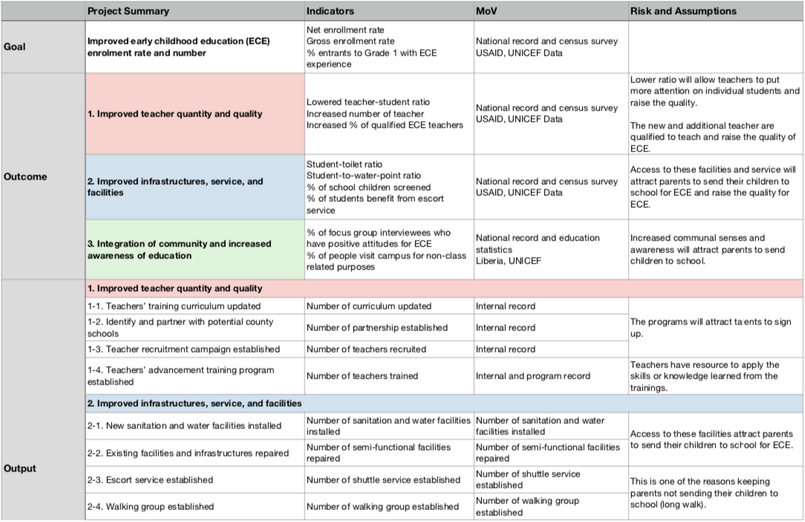

Getting the Best Education
A Development Project Design
The project, for international management and leadership class, required students to develop an original project based on research, apply the tools for problem analysis and project implementation, and practice team-working and management skills.
The team, in partnership with the Government of Liberia, codesigned the “Getting the Best Education: Rebuilding Liberia” Project, which aims to address a deficit in the quality of early childhood education.
Project Overview
Considering the difficulty to address the problem from the national scale, we decided to start with a model district in Grand Gedeh, a county in Eastern Liberia, and focus on Early Childhood Education (ECE). Our goal is to increase the net enrolment rate in public school from 32% to 40% in 3 years in Grand Gedeh.
We developed three areas for improvement: advancing teaching skills, increasing resources for students, and raising community awareness for ECE.
Problem Analysis
Advancing teaching skills
Many ECE teachers did not have adequate training and certification, which comes from the reliance on volunteers and the absence of a curriculum and continuous training program; therefore, we will focus on recruiting qualified teachers by introducing housing programs. Meanwhile, the curriculum for current teacher training will be updated by experts and establish a professional development program.
Increasing resources for students
The shortage of quality schools and facilities and the long walking distance are some reasons that parents are unwilling to send their children for ECE, especially girls. To address this problem, we will hire contractors to repair existing, functional facilities and install new WASH facilities, establish shuttle service program and walking group companion, start free lunch program, and provide health screening service.
Raising community awareness for ECE
Due to the lack of information and understanding, parents send children to school when overage, or don’t. We will tackle these problems by making ECE information readily available with ECE centre, extending school operation hours, and offering adult classes and workshops.
Logframe
From the previous graph, we listed out three long-term outcomes and the corresponding outputs and specific activities.

Gantt Chart / Workplan
The program is estimated to complete in three years. New semesters start in September so the first nine months will focus on administrative tasks and, after students are enrolled, programs for the children will begin.
Finance
The project has an estimated cost of $3,088,892 for the 3-year duration. Around 87.9% of the budget, $2,715,964, is directly spent on the project activities, and the rest of 12.1%, $372,928, covers personnel, administrative, and monitoring and evaluation cost.
These numbers came from UNESCO, the World Bank, UN-Habitat, and other international organisations’ report or estimation within five years.
The budget implementation will align with the sponsors’ motives both in the financial and policy aspects and manage resources efficiently and effectively.
Feedback and Reflection
While I had experience in designing development projects, my previous work was on a smaller scale, fragmented, and not well-documented. This project was my first entire and complete project, starting from problem analysis, during which I had to keep asking why and digging deeper to find the root causes, instead of approaching the problem with pre-determined solutions.
There were many challenges in the process. For a team of four with different backgrounds, communication is the key; and I think we could do better in communicating and making sure all are on the same page. Additionally, due to time constraints, we had to rush through narratives in the proposal.
That being said, I am thrilled with the outcome. I was able to see the problem with new perspectives and approach with new solutions. From sketching a problem tree to presenting the proposal, I read through dozens of documents on early childhood education and project design and implementation.
As one of the UN’s Sustainable Development Goals (SDGs), a quality early childhood education system is crucial to transform the world and build human capital. I hope that I will be able to continue working on this project and create a model district to observe the effects of these activities.
Additional Information
The project is done between September 2019 and December 2019 with guidance from Professor Jeb Beagles.